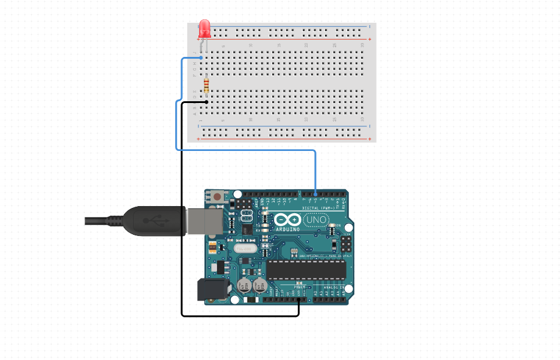
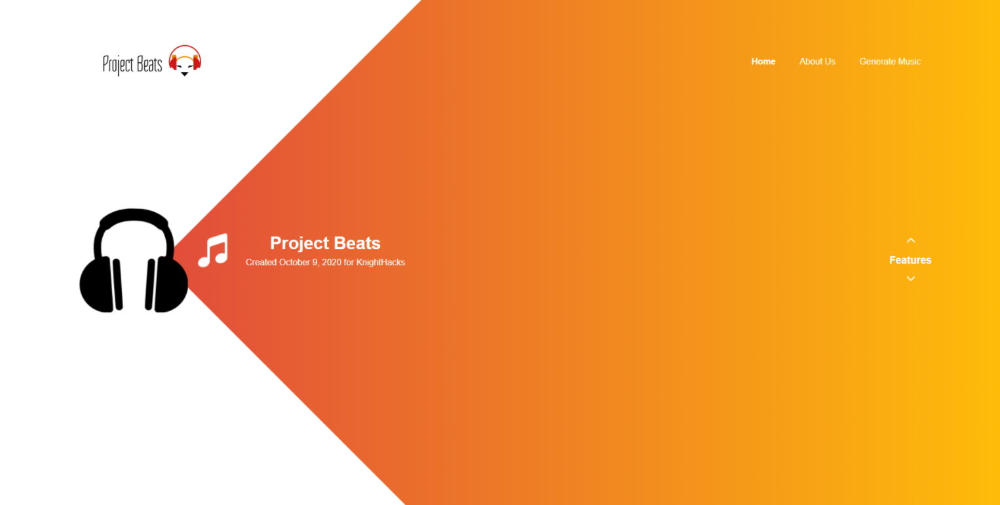

Knightro's Gambit
Phantom Arms
Automatic Cereal Dispenser

Morse Code LED

Almost a Forest
Failfish

If you're reading this, hello! Welcome to my webpage! Here's a glimpse of who I am:
I am a third year undergraduate student at the University of Central Florida. Currently, I'm studying to get my Bachelor's of Science in Computer Engineering. I have a background in Network Administration and Troubleshooting, and have earned a few industry-standard certifications to reflect my knowledge. I also have some experience in web development and working on software projects with a team of people.
Despite my experience in Information Technology and Software Development, I am passionate in getting involved with the hardware side of things. I am an active member in the Institute of Electronics Engineers (IEEE) chapter at my university and the Software Director of the Project Committee.